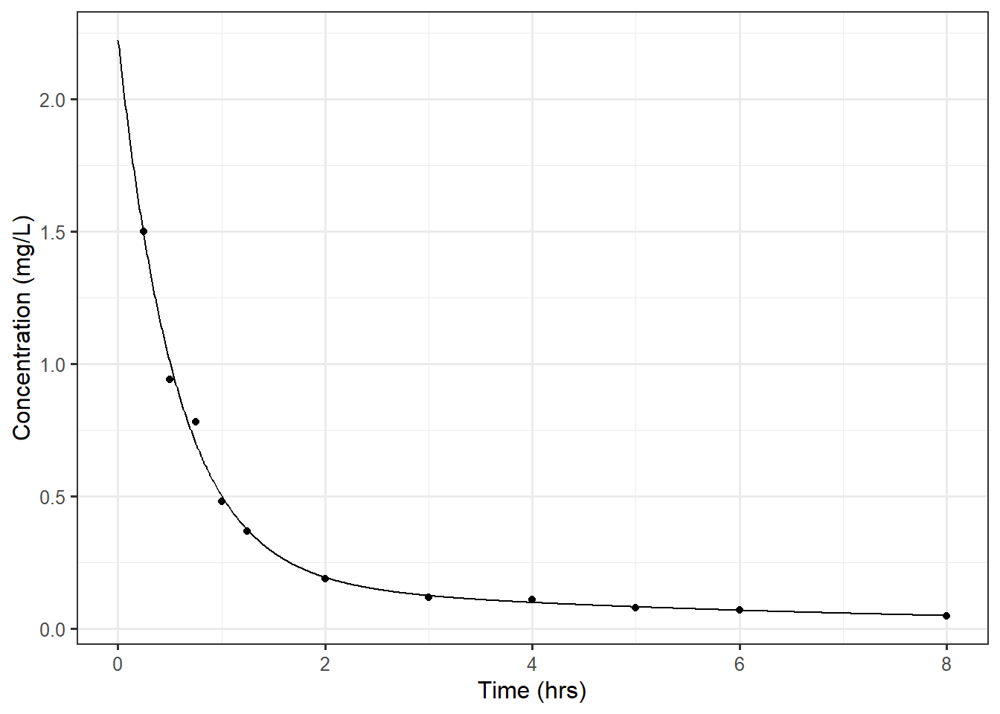
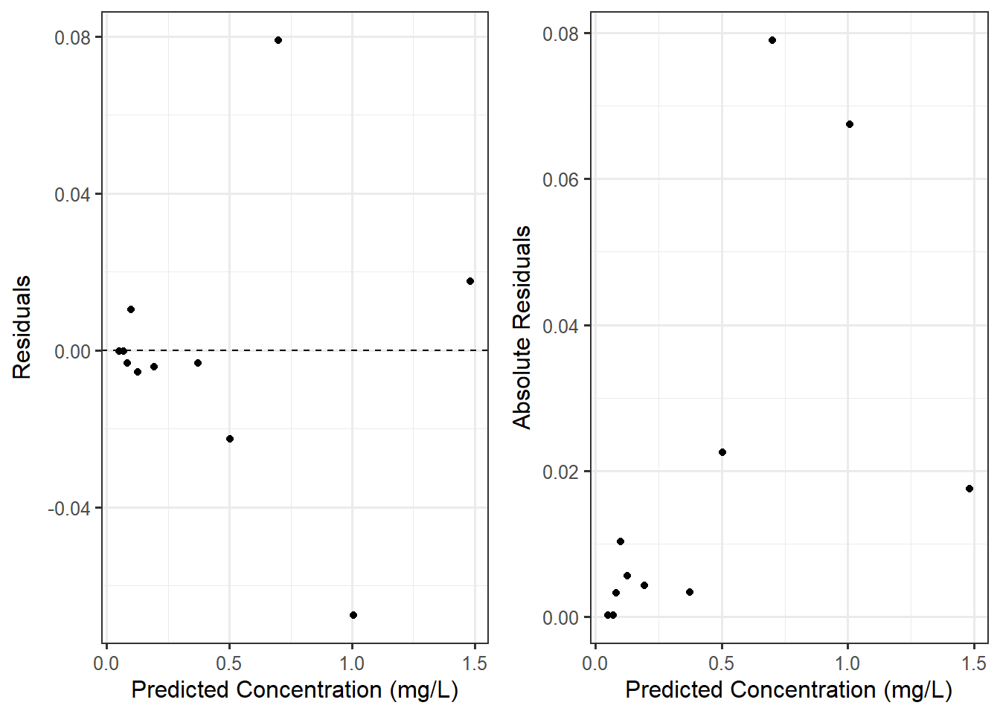
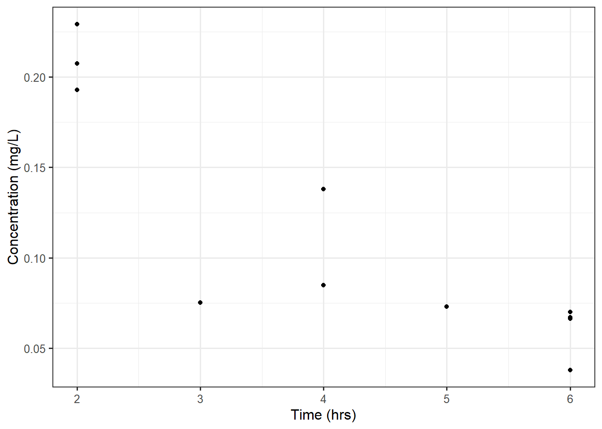
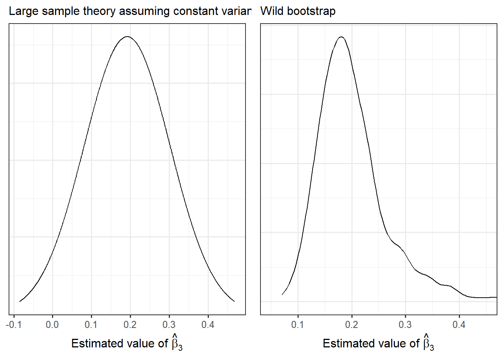

17 Relaxing the Constant Variance Condition
We proposed a semiparametric approach for specifying nonlinear models (Definition 16.2). In this chapter, we first discuss the conditions imposed in this approach; then, we consider how these conditions might be relaxed. Specifically, we discuss methods for relaxing the “constant variance” condition.
Note
While we introduce methods for relaxing the “constant variance” condition within the context of nonlinear models, these methods are applicable to a wider range of models including linear models and models for repeated measures data.
17.1 Conditions for Nonlinear Models
Chapter 16 introduced the nonlinear modeling framework, a semiparametric approach for modeling the data generating process, and methods for estimating the parameters of the model. While a semiparametric model is quite flexible, its specification does place certain conditions on the data generating process.
Conditions for the Semiparametric Nonlinear Model
A semiparametric model places the following conditions on the data generating process:
- The mean response function is correctly specified.
- Given the value of the predictors, the response for one observation is independent of the response for all other observations.
- The variability of the response is the same for all values of the predictor (also known as “homoskedasticity” or “constant variance”).
These are essentially the same first three conditions we imposed in the general linear model framework (Definition 4.3); since the linear model is a special case of the nonlinear model, it should not come as a surprise that we impose the same conditions. As the conditions imposed on our nonlinear model are the same as those imposed in the general linear model framework, the conditions can be assessed in the same way — residual graphics. We can define the residual for the \(i\)-th observed value as
\[ \begin{aligned} (\text{Residual})_i &= (\text{Observed Response})_i - (\text{Predicted Mean Response})_i \\ &= (\text{Observed Response})_i - f\left((\text{Predictors})_i, \widehat{\boldsymbol{\beta}}\right). \end{aligned} \]
A plot of the residuals against the predicted values can be used to assess whether the mean response function is correctly specified. If this condition is met, we would expect the residuals to balance around zero for all predicted values. Recall that for nonlinear models, the mean response function is often the result of scientific theory; therefore, assessing this “mean-0” condition allows us to assess if the process we are observing is behaving according to the scientific theory underlying the model.
When the order in which the data was collected is known, we can use a time-series plot of the residuals to assess whether it is reasonable to assume the responses are independent of one another. If the response, given the predictors, of one observation is independent of the response for all other observations, we would not expect to observe any trends in the location or spread of the time-series plot. As with the linear model, we note that this graphic can only detect dependence across time; we should rely on the context to determine if there are additional reasons to suspect dependence (such as repeated measures).
Finally, we can assess the condition imposed on the variability using a plot of the residuals against the predicted values. If the variance of the response has been correctly specified, then we would expect the spread of the residuals to remain fairly constant as we move left-to-right across the plot.
Note
Nonlinear modeling applications often have small samples. As a result, it can be difficult to assess constant variance from the plot of the residuals against the fitted values. A “trick” is to plot the absolute value of the residuals against the fitted values. This “doubles” the visual information in the graphic and can allow us to more easily pick up trends in the spread.
Note
While we do not assume the response (conditional on the predictors) follows a Normal distribution, if we had, we could assess this condition using a probability plot of the residuals.
Example 17.1 (Pharmacokinetics of Indomethacin) Indomethacin is a non-steroidal anti-inflammatory (NSAID) pain reliever used to treat severe pain and prevent premature labor in some cases. A study was conducted to examine the pharmacokinetic properties of the drug. Indomethacin is given as an IV-bolus and travels through the blood and deeper tissues. Scientists model this as a “two-compartment open model.” This approach leads to the following nonlinear model for the concentration \(C(t)\) of the drug at any time \(t\):
\[C(t) = \beta_1 e^{-\beta_2 t} + \beta_3 e^{-\beta_4 t}\]
which is also known as the bi-exponential model with four parameters, \(\beta_1, \beta_2, \beta_3,\) and \(\beta_4\).
Blood samples were taken periodically (over the course of 8 hours) from a single subject after being given an IV-bolus of the drug. The data is shown in Figure 17.1.
Given the researchers’ beliefs, we might posit the following nonlinear model:
\[ \begin{aligned} E\left[(\text{Concentration})_i \mid (\text{Time})_i\right] &= \beta_1 e^{-\beta_2 (\text{Time})_i} + \beta_3 e^{-\beta_4 (\text{Time})_i} \\ Var\left[(\text{Concentration})_i \mid (\text{Time})_i\right] &= \sigma^2. \end{aligned} \tag{17.1}\]
The unknown parameters are estimated using the method of least squares (Chapter 20); and, we can assess the conditions using the residuals. Figure 17.2 plots the residuals against the predicted values; and, it plots the absolute value of the residuals against the fitted values. In the first panel, we see the residuals tend to balance around 0 at all predicted responses; that is, the data is consistent with the two-compartment open model suggested by researchers (that led to the bi-exponential nonlinear model). However, in both the first and second panel, it is clear that the spread of the residuals increases as the predicted concentration increases. That is, we measure small concentrations with more precision than large concentrations.

Recall that misspecifying the variance does not mean that our parameter estimates are inappropriate. However, incorrectly assuming the variance is constant results in an inappropriate model for the sampling distribution of those estimates, which in turn means our confidence intervals and p-values may be unreliable.
In Chapter 15, we mentioned that using the robust sandwich estimator of the variance-covariance matrix adjusts for departures from constant variance. While this was done in the context of repeated measures, the robust sandwich estimator can be employed in settings where we know each observation is independent.
Note
The robust sandwich estimator is sometimes referred to as the Huber sandwich estimator, the White estimator, or the Huber-White estimator.
In the remainder of this chapter, we consider two additional approaches to addressing departures from homoskedasticity.
17.2 Modeling the Variance
Notice that to assess the condition of constant variance, we plot the residuals against the predicted values. This is not necessarily intuitive. In fact, the condition states that the variability of the response is constant for all values of the predictors; so, it may seem more reasonable to plot the residuals against each predictor. In fact, this is sometimes taught in other texts and routinely done by analysts, and there is nothing wrong with that approach. We advocate for plotting the residuals against the predicted values because it highlights a common phenomena — the variability of the response often depends on the value of the response.
In our discussion in the previous section, we noted that Figure 17.2 illustrates that as the concentration increases, the variability in the concentration tends to increase as well. That is, we have much more precision when measuring small concentrations, and we have much less precision when measuring large concentrations. When we have some sense of how the variability behaves, especially as a function of the mean response, we can model that structure.
Big Idea
When we can specify how a component of the response distribution (such as the mean or variance) behaves, we can incorprate it into the model.
Definition 17.1 (Generalized Least Squares) The semiparametric nonlinear model can be generalized to capture non-constant variance. Specifically, we specify the mean and variance of the response given the predictors
\[ \begin{aligned} E\left[(\text{Response})_i \mid (\text{Predictors})_i\right] &= f\left((\text{Predictors})_i, \boldsymbol{\beta}\right) \\ Var\left[(\text{Response})_i \mid (\text{Predictors})_i\right] &= g\left((\text{Predictors})_i, \boldsymbol{\beta}, \boldsymbol{\gamma}\right). \end{aligned} \]
Such a model is fit with the method of generalized least squares (as opposed to “ordinary” least squares) in which we alternate between (a) minimizing a weighted distance between the observed response and the mean function and (b) minimizing the distance between the squared residuals and the variance function. That is, we minimize
\[ \begin{aligned} &\sum_{i=1}^{n} \frac{1}{g\left((\text{Predictors})_i, \boldsymbol{\beta}, \boldsymbol{\gamma}\right)} \left[(\text{Response})_i - f\left((\text{Predictors})_i, \boldsymbol{\beta}\right)\right]^2 \\ &\sum_{i=1}^{n} \left(g\left((\text{Predictors})_i, \boldsymbol{\beta}, \boldsymbol{\gamma}\right) - \left[(\text{Response})_i - f\left((\text{Predictors})_i, \boldsymbol{\beta}\right)\right]^2\right)^2. \end{aligned} \]
Essentially, this approach down-weights responses which have less precision when fitting the model. As an iterative process, it allows the parameters in the mean model to be updated based on the variance estimates, and the estimates in the variance function to be updated based on the mean estimates. Further, allowing the variance function to depend on the parameters in the mean response function captures behaviors like that in the Indomethacin example where the variability is dependent upon the values of the response. A popular model is the power of the mean model.
Definition 17.2 (Power of the Mean Model) The power of the mean model allows the variance to be specified as a power of the mean response function. Specifically, we consider
\[ \begin{aligned} E\left[(\text{Response})_i \mid (\text{Predictors})_i\right] &= f\left((\text{Predictors})_i, \boldsymbol{\beta}\right) \\ Var\left[(\text{Response})_i \mid (\text{Predictors})_i\right] &= \sigma^2 \left[f\left((\text{Predictors})_i, \boldsymbol{\beta}\right)\right]^{2\theta} \end{aligned} \]
The details of implementing generalized least squares are beyond the scope of this text. We simply mention that this is a method for addressing heteroskedasticity (non-constant variance). Implementing generalized least squares results in appropriate inference about the parameters in the mean model. Large sample theory is relied upon to develop these sampling distributions.
17.3 Wild Bootstrap
Chapter 11 introduced the residual bootstrap as a method of relaxing distributional conditions. Specifically, the residual bootstrap avoided the need to assume the errors in a linear model followed a Normal distribution. However, it still required assuming the variability of the errors was constant; that is what allowed us to resample from the residuals during the algorithm. In this section, we extend these ideas to overcome heteroskedasticity in nonlinear models.
At first glance, it is not obvious why an additional algorithm for bootstrapping is necessary. In addition to the residual bootstrap, we discussed case-resampling as a method of bootstrapping. Case-resampling does not require that we assume the variability of the response is constant for all values of the predictor. However, the performance of this particular algorithm can be quite poor in nonlinear settings due to the lower sample sizes that are common. In particular, fitting a nonlinear model can be very unstable. If, when resampling the cases, we do not observe data in key regions that define the curvature, the numerical algorithms underlying the minimization can fail to converge to a solution. As an example, consider the Indomethacin data in Figure 17.1. Suppose that we performed a single bootstrap resample in which we resampled \(n = 11\) observations, with resampling, at random. It is quite possible that we end up with a resample containing only data between times 2 and 8 (see Figure 17.3).

This bootstrap resample inadvertently misses the concentrations measured early in time which define the curvature in the data. As a result, attempting to fit the bi-exponential model in Equation 17.1 fails. This failure is not the result of specific software limitations; the failure is a result of not having adequate data to capture the curvature expressed in the model.
So, while case-resampling avoids assuming constant variance, it can fail spectacularly in some nonlinear models. The residual bootstrap, on the other hand, assumes constant variance, but it maintains the curvature as the same predictor values are used when constructing each bootstrap resample. Pseudo-responses are generated in each bootstrap resample by adding a sample of the residuals to the fitted values (“jittering” the fitted line so to speak). The wild bootstrap is an alteration of the residual bootstrap which relaxes the assumption of constant variance while maintaining this beneficial property of the residual bootstrap.
Definition 17.3 (Wild Bootstrap) Suppose we observe a sample of size \(n\) and use it to fit the mean model (linear or nonlinear)
\[E\left[(\text{Response})_i \mid (\text{Predictors})_i\right]= f\left((\text{Predictors})_i, \boldsymbol{\beta}\right)\]
to obtain the ordinary least squares estimates \(\widehat{\boldsymbol{\beta}}\). The wild bootstrap proceeds along the following algorithm:
- Compute the residuals \[(\text{Residual})_i = (\text{Response})_i - f\left((\text{Predictors})_i, \widehat{\boldsymbol{\beta}}\right)\]
- Construct new pseudo-residuals \(e_1^*, \dotsc, e_n^*\) by multiplying each residual by a random variable \(U\) such that \(E\left(U_i\right) = 0\) and \(Var\left(U_i\right) = 1\), for example \(U_i \sim N(0,1)\): \[e_i^* = U_i (\text{Residual})_i\]
- Form “new” responses \(y_1^*, \dotsc, y_n^*\) according to \[y_i^* = f\left((\text{Predictors})_i, \widehat{\boldsymbol{\beta}}\right) + e_i^*.\]
- Obtain the least squares estimates \(\widehat{\boldsymbol{\alpha}}\) by finding the values of \(\boldsymbol{\alpha}\) which minimize \[\sum_{i=1}^{n} \left(y_i^* - f\left((\text{Predictors})_i, \boldsymbol{\alpha}\right)\right)^2.\]
- Repeat steps 2-4 \(m\) times.
We often take \(m\) to be large (at least 1000). After each pass through the algorithm, we retain the least squares estimates \(\widehat{\boldsymbol{\alpha}}\) from the resample. The distribution of the estimates across the resamples is a good empirical model for the sampling distribution of the original least squares estimates.
The wild bootstrap alters the residuals (as opposed to resampling them as in the residual bootstrap) to mimic the variability of the response being potentially unique for each observation. The theoretical underpinnings are beyond the scope of this text, but intuitively, we are adding noise to the line (“jittering” the predicted model) such that the noise has mean zero (meaning the model is still correctly specified) and has variance of the same magnitude as the original observation (captured by the magnitude of the residual).
This process is computationally intensive but can dramatically improve inference when necessary. For the data from Example 17.1, Figure 17.4 compares the model for the sampling distribution of \(\widehat{\beta}_3\) assuming constant variance and after implementing a wild bootstrap. Assuming constant variance, our 95% CI for \(\beta_3\) is (-0.03, 0.41); after implementing a wild bootstrap, we have a 95% CI for \(\beta_3\) of (0.11, 0.40).
